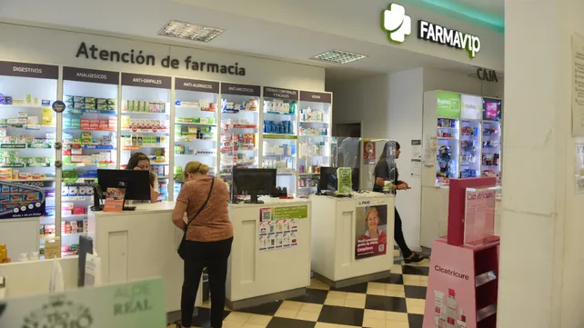

Un hackeo a nivel nacional impide a las farmacias rosarinas hacer descuentos sobre medicamentos
Lo confirmó la titular del Colegio de Farmacéuticos . Les prometieron una solución para la mañana de este martes, pero seguían esperando novedades
Un hackeo a los servidores de una empresa que valida transacciones online tiene en vilo al sector farmacéutico nacional ya que en la plataforma de la firma se realizan transacciones para hacer descuentos a clientes de prepagas y obras sociales de todo el país. Rosario no es ajena a la situación: desde el Colegio de Farmacéuticos aseguraron a La Capital que todos los comercios del rubro y los afiliados se encuentran afectados por un problema que lleva cinco días sin solución.
Si bien señalaron desde la empresa que gestiona el sistema de validación que este ataque no implicó el robo de datos, ni de beneficiarios ni de prestadores, miles de personas no pudieron retirar medicamentos debido a que muchas farmacias se negaron a hacer descuentos de forma manual para que después fueran reintegrados por las empresas.
Este mismo ataque también afectó a los sistemas de transporte de Córdoba y de provincias del Noroeste Argentino (NOA).
La empresa Bizland, que administra el sistema de la firma Farmalink encargada de la validación online de transacciones en los rubros de la salud y farmacia a través de la plataforma IMED, confirmó los inconvenientes que sufría la red a fines de la semana pasada. Si bien admitieron ser víctimas de un intento de hackeo en sus servidores, aseguraron en un comunicado que esta maniobra "no implicó el robo de datos sensibles de los beneficiarios y prestadores", aunque aclararon que "sí afectó a la operatividad de su red de comunicaciones, por lo cual existe imposibilidad para validación online de consumos de salud".